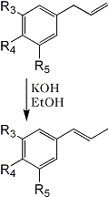

HTML by Rhodium

3 | 4 | 5 | |
a |
OCH3 | OH | H |
b |
OCH3 | OCH3 | H |
c |
O-CH2-O | H | |
d |
O-CH2-O | OCH3 | |
e |
OCH3 | OCH3 | OCH3 |
The aromatic ether fraction of oil of nutmeg has been previously shown1 to consist of eugenol (Ia), isoeugenol (IIa), safrole (Ic) and myristicin (Id). Vacuum distillation yields a fraction (bp 109-112°C/1 mmHg; 60g from 1 kg of "W.I." oil of nutmeg (George Lueders and Co.)) which consisted of a substance heretofore accepted both chemically1,2 and pharmacologically3 as the single compound, myristicin (Id).
The isomerization of this fraction with alcoholic potassium hydroxide yielded (trans) isomyristicin (IId), isolated by crystallization of the distilled reaction mixture. The mother liquors of this isolation. on analysis by vapour phase chromatography provided the first indication of the complexity of the above 'myristicin' fraction. Of the four peaks observed (Fig. 1). No. 1 was easily identified as methyl isoeugenol (IIb) by its infra-red spectrum and direct comparison to a commercial sample. Peak No. 3 was to a large extent trans-isomyristicin not removed by crystallization. The remaining two peaks were isolated using a Beckman Megachrome preparative V.P.C. instrument using a substrate of silicone 710, on firebrick at 220°C. The presence of a methylenedioxy group (by nuclear magnetic resonance) and the absence of absorption in the 963-967 cm-1 region of the infra-red spectrum of peak 2 strongly suggested that the isomer might be cis-isomyristicin. That trans-propenyl aromatic ethers possess a characteristic absorption band in the above region (which is transparent for the cis-isomer) has been shown for isosafrole4, anethol5, isoeugenol, methylisoeugenol6 and asarone7. Further, it has been shown recently7,8 that the cis-isomer of the stereo-isomeric pairs invariably precedes the trans-isomer during vapour chromatography. This peak was verified as cis-isomyristicin by its conversion to trans-isomyristicin (IId) and its synthesis from myristicin, both with alcoholic potassium hydroxide.
The fourth peak was also isolated by preparative chromatography and showed the absence of a methylenedioxy group, but the presence of a strong band at 957 cm-1. lsoelemicin (IIe) was synthesized by the potassium by hydroxide isomerization of elemicin9 and was found to possess an identical infra-red spectrum.
Methylisoeugenol may be assumed to be in the propenyl form in the original sample of nutmeg distillate. There is an Unresolved peak at this identical time in the original 'myristicin' fraction, and a search for the logical precursor methyl eugenol, has been unsuccessful1.
The implied presence of elemicin (Ie) in the original myristicin fraction was confirmed by the successful separation of it from myristicin by the low-temperature chromatography (158°C, silicone 'SF-96') as shown in the lower part of Fig. 1. Repeated fractional distillation was ineffective in increasing the myristicin content of this constant boiling fraction over 70 per cent. Consequently in assigning chemical and biological properties to the substance as isolated from nutmeg allowance must be made for this congeneric contaminant.